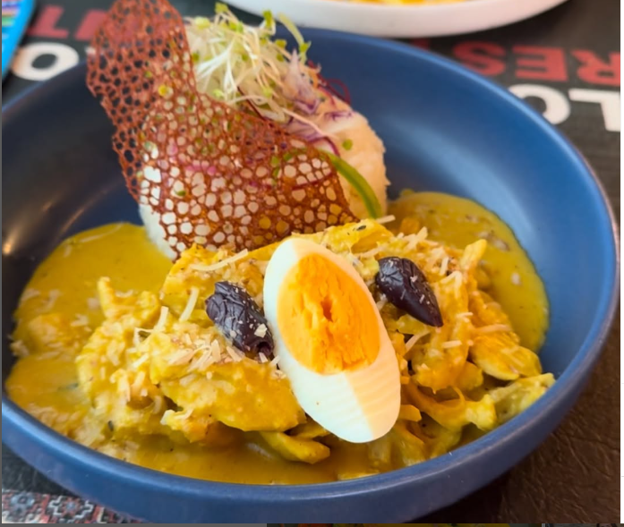
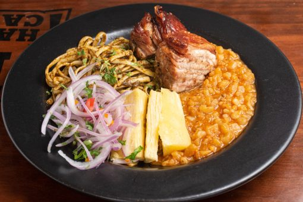

Nuestros Exquisitos Platos de Fondo

Ají de gallina
S/ 25.00
Delicioso plato a base de carne de gallina, leche y pecanas. Va acompañado con huevo,aceitunas y queso parmesano.

Carapulcra Chinchana
S/ 28.50
Comida a base de papa con un aderezo típico de la zona a base de hierbas y condimentos especiales. Va acompañado de sopa seca y un troz de chancho de 200gr. Ensalada de cebolla con ajíes.
Frejoles con cabrito a la norteña
S/ 25.00
Comida a base de frijoles,arroz y un trozo de carne de cabrito jugoso y suave. Va acompañado de ensalada de cebolla y ajíes.

Tallarines con Lomo saltado
S/ 30.00
Comida a base de carne de res, tomate y cebolla. Va acompañado de tallarines con salsa a la huancaina. Tiene una mezcla de sabores muy agradable al paladar